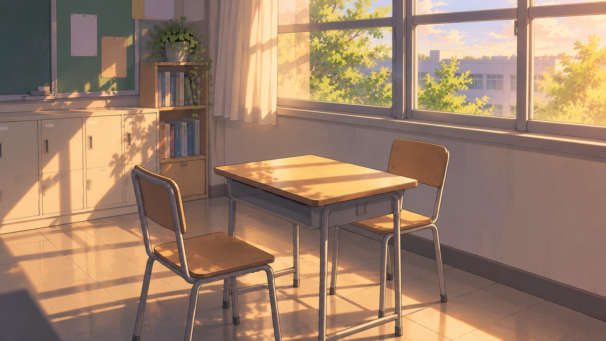

대화 중
대화와 제시한 단서는 자동 저장됩니다

WITNESS
재연
영어학원·농구 친구
LIVE INTERROGATION
말을 듣고, 필요하다고 판단한 단서를 직접 제시하세요.
대화 기록
학생들의 해석이 중요합니다대화 선택
대화에 따라 선택지가 달라집니다단서 인벤토리
현재 확보한 단서만 표시됩니다.
단서를 이곳에 끌어다 놓아 증인에게 보여주세요.
태블릿에서는 단서를 탭한 뒤 이 영역을 누르세요.
태블릿에서는 단서를 탭한 뒤 이 영역을 누르세요.